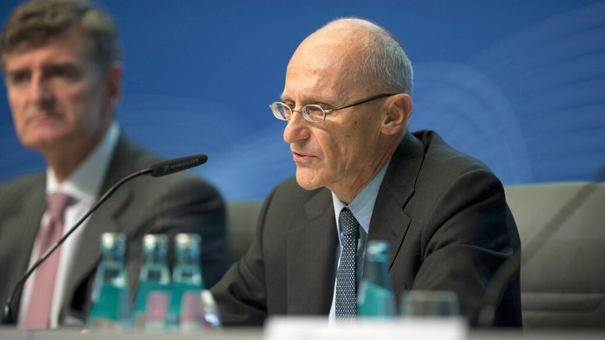

La pandemia llega a España
El exprimer ministro italiano Matteo Renzi (Florencia, 45 años), apoyo del Gobierno de coalición de Italia, fue de los primeros en invocar el aislamiento de todo el país para frenar al coronavirus. Ahora pide extender la experiencia a todo el continente. En una entrevista telefónica con EL PAÍS, realizada antes del anuncio de medidas adicionales por el primer ministro italiano, Giuseppe Conte, envía un aviso a España, el tercer Estado de Europa con más casos, que en su opinión, atendiendo a la evolución de los contagios, en poco tiempo podría encontrarse en la misma situación que el país transalpino.
Trump suspende los viajes desde Europa durante un mes por el coronavirus
Trump, que hasta ahora ha tratado de quitar hierro a la gravedad de la crisis, se dirigió a los estadounidenses en un tono severo, sentado en el escritorio del Despacho Oval, al final de un día aciago. Una vez finalizado el discurso, la Casa Blanca tuvo que aclarar que las restricciones no iban a afectar al comercio y las mercancias, como había dicho el presidente. El malentendido se debió a que Trump se salió del liberto. Las compañíasde seguro también salieron a puntualizar que la suspensión del copago aplicará solo para las pruebas, pero no para el tratamiento de la enfermedad. El goteo de noticias de organizaciones suspendiendo actividades -los populares pasacalles por las fiestas de San Patricio o los mítines de las elecciones primarias demócratas- incrementaron gradualmente la sensación de emergencia en el país. La Organización Mundial de la Salud (OMS) había declarado la pandemia del virus de Wuhan ese mismo día. Por la noche, poco después del discurso del presidente, la NBA anunció la suspensión de la temporada y el Departamento de Estado emitió la recomendación a los estadounidenses de no salir del país.
Según detalló el Departamento de Seguridad Interior, Estados Unidos prohíbe la entrada de “la mayor parte de extranjeros” que en los últimos 14 días hayan estado en los países incluidos en el espacio Schengen: Alemania, Austria, Bélgica, Dinamarca, Eslovenia, España, Estonia, Finlandia, Francia, Grecia, Holanda, Hungría, Islandia, Italia, Letonia, Liechtenstein, Lituania, Luxemburgo, Malta, Noruega, Polonia, Portugal, República Checa, República Eslovaca, Suecia y Suiza. Los estadounidenses, residentes permanentes en la UE o sus familiares directos quedan exentos. China está en el nivel 4, lo que significa que no se puede volar al gigante asiático por ningún motivo. La medida tomada por Trump fue mal recibida en la Unión Europea. El presidente del Consejo Europeo, Charles Michel, y su homóloga de la Comisión Europea, Ursula von der Leyen, publicaron este jueves un comunicado en el que apuntaban que “el coronavirus es una crisis global, no limitada solo a un continente, y requiere cooperación en lugar de medidas unilaterales”. El mandatario estadounidense argumentó más tarde en el Despacho Oval que no había consultado a sus pares europeos porque no había tiempo. “Lleva mucho tiempo llamar a cada uno individualmente”. Trump dijo que no incluyó a Reino Unido en las restriccones porque estaban haciendo “un buen trabajo” en la lucha contra el brote. Hasta ahora, los ingleses han registrado 590 casos y 10 muertes.
El BCE planea aplazar los test de estrés de la banca por el coronavirus
El supervisor europeo se encuentra sumergido en un intenso debate, porque los recientes acontecimientos mundiales han provocado un parón en las grandes economías europeas, entra las que se encuentran España e Italia. La epidemia que se ha propagado por todo el mundo ha obligado a multitud de entidades financieras a teletrabajar, por lo que no tienen recursos suficientes para hacer los informes pertinentes con toda la rigurosidad que este tipo de test requieren. A esto hay que sumar que los banco tienen que entregar una serie de documentos a la EBA antes del 31 de marzo, lo que resulta casi inviable por las circunstancias logísticas actuales, reconocen desde una de las casas de análisis españolas. Y es que, por mucho que se quiera llegar a tiempo, es evidente que el ritmo de trabajo ha disminuido. Por eso es muy probable que, como mínimo, este requerimiento se aplace.
La Comisión Europea ya anunció este martes, después de una videoconferencia que se celebró con todos los líderes de la UE (en la que también participó Pedro Sánchez), que va a abrir un fondo de respuesta al coronavirus dotado inicialmente con 7.500 millones de euros que espera que acaben aumentando hasta llegar a la cuantía de 25.000 millones, fruto de la contribución de todos los países europeos. El Banco de Inglaterra también ha decidido hacer un recorte de emergencia de medio punto a los tipos de interés, del 0,75% al 0,25%, un mínimo histórico, a fin de apuntalar la economía británica debido a la crisis generada por el coronavirus. La entidad reconoce que, si bien el impacto económico del virus es incierto, es probable que la actividad económica se debilite en los próximos meses en el Reino Unido. Por otro lado, el Gobierno de España aprobará este jueves en un consejo de ministros extraordinario un paquete de medidas económicas para dar respuesta a esta situación, después de haberlas consensuado con Bruselas y de asegurarse de que cualquier aumento del gasto no computará en el objetivo de déficit público.
Así ha logrado Corea del Sur reducir su tasa de infectados por coronavirus sin cerrar ciudades o regiones enteras como han hecho China o Italia
Una disminución de los casos que Gang-lip atribuyó a varios factores, destacando la colaboración ciudadana, la comunicación frecuente y veraz y la realización de pruebas a gran escala. Según sus datos, el país es capaz de procesar hasta 15.000 test de diagnóstico diarios. En contraste, las autoridades coreanas parecen mostrarse reacias a tomar medidas encaminadas al bloqueo de ciudades como las asumidas por China o Italia. Bajo su criterio estas posturas pueden socavar el espíritu de la democracia, siendo difíciles de encarar en una sociedad abierta, según apunta el medio hongkonés South China Morning Post.
La aplicación, desarrollada por el Ministerio del Interior y Seguridad, permite a los pacientes mantenerse en contacto con los trabajadores sanitarios e informar de su progreso. De igual manera la app se sirve del GPS para realizar un seguimiento de su ubicación y asegurarse de que no rompen la cuarentena. En este sentido, las pautas asumidas por los Centros Coreanos para el Control y la Prevención de Enfermedades (KCDC) establecen que cualquier persona que haya entrado en contacto con un afectado por el coronavirus debe someterse a una cuarentena obligatoria de dos semanas. Otras medidas en cambio pueden resultar más polémicas. Alertas vía móvil llegan a los ciudadanos que viven o trabajan en zonas donde se han confirmado casos. Incluso información sobre los viajes y movimientos de confirmados son publicados de manera abierta en webs gubernamentales y municipales, de acuerdo a informaciones de France 24. "Los historiales de viaje de los pacientes confirmados se hacen públicos y se realizan sesiones informativas dos veces al día", confirmaba el propio Kim Gang-lip en rueda de prensa. Un exceso en la transparencia informativa que parece más difícil de asumir en una sociedad abierta que limitar el movimiento de los ciudadanos en un área infectada.